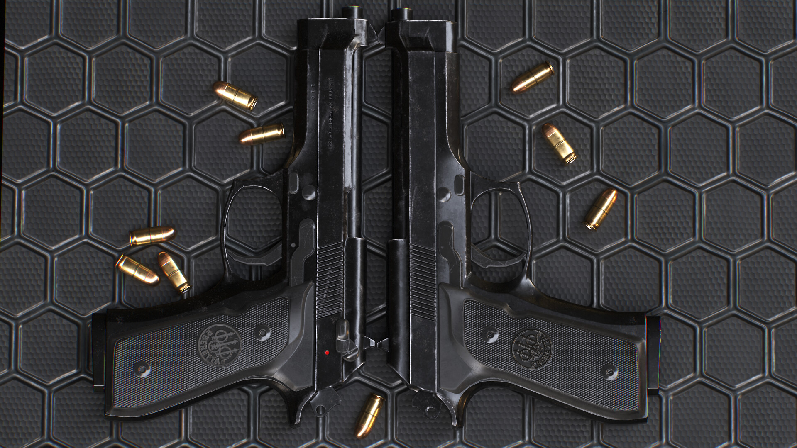
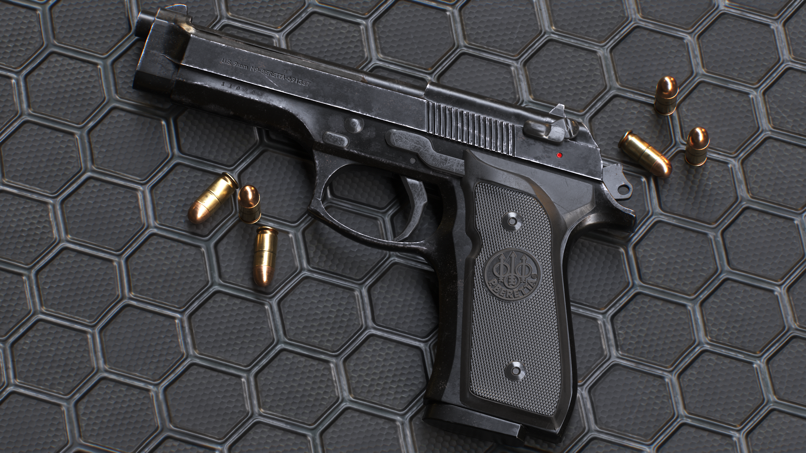
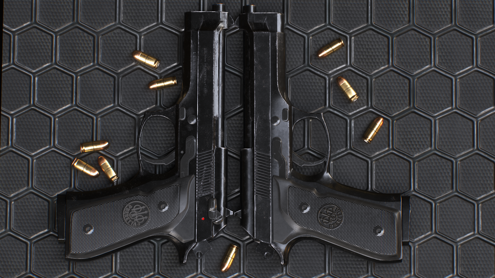
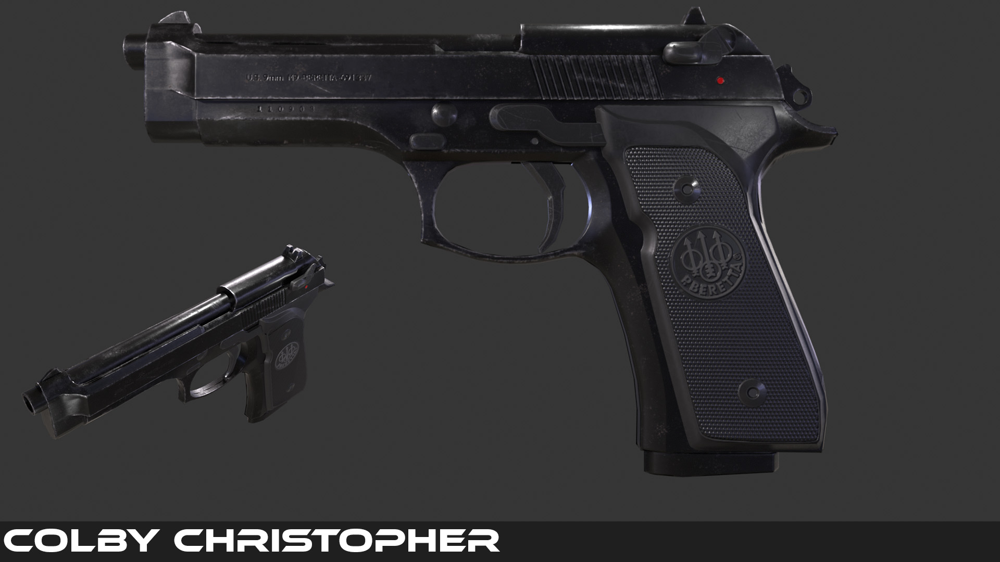
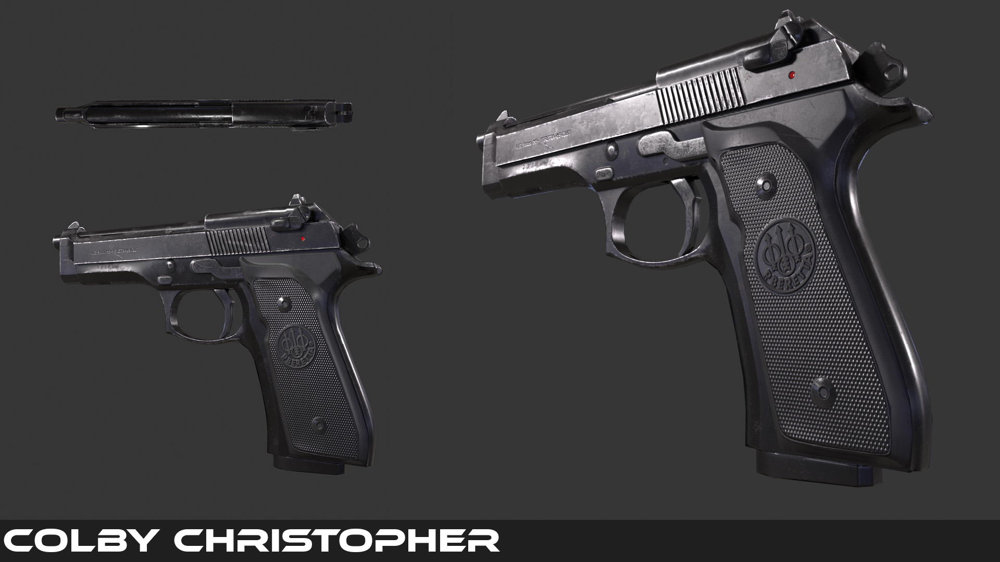
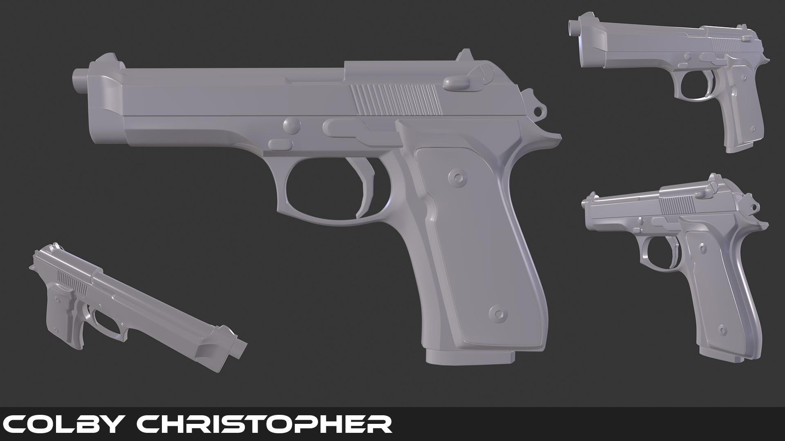
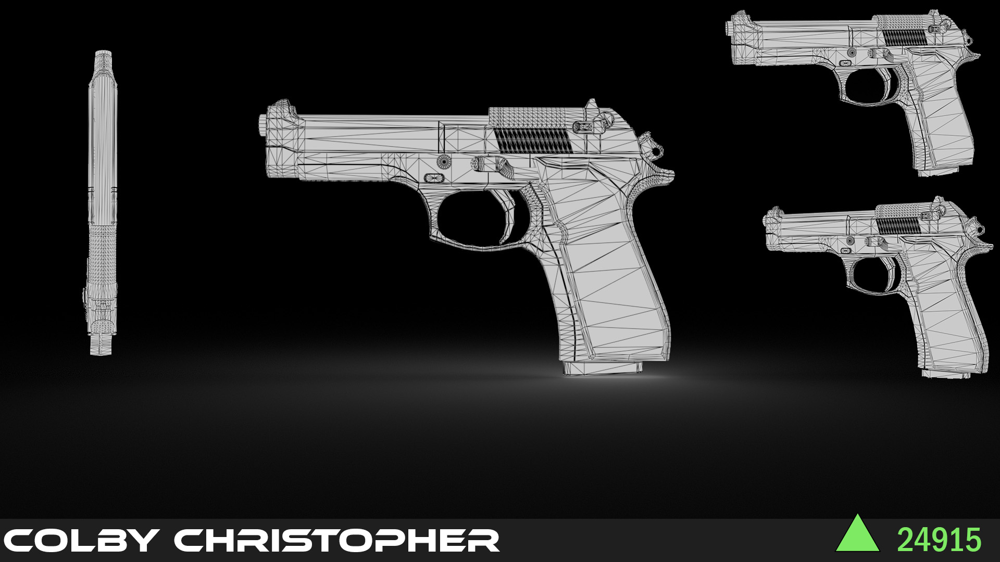

This was one of the first weapon models that I created using Autodesk Maya. Unlike my newer projects, I ended up using the SubD workflow in creating this pistol.
I actually returned to this project after completing the R8 Revolver tutorial, in order to re-render some shots to showcase it better.
I feel like this this first project where I had a good grasp on baking from high-to-low.
These were some of the original renders before the overhaul.
 The highpoly model...
...and wireframe shot.
